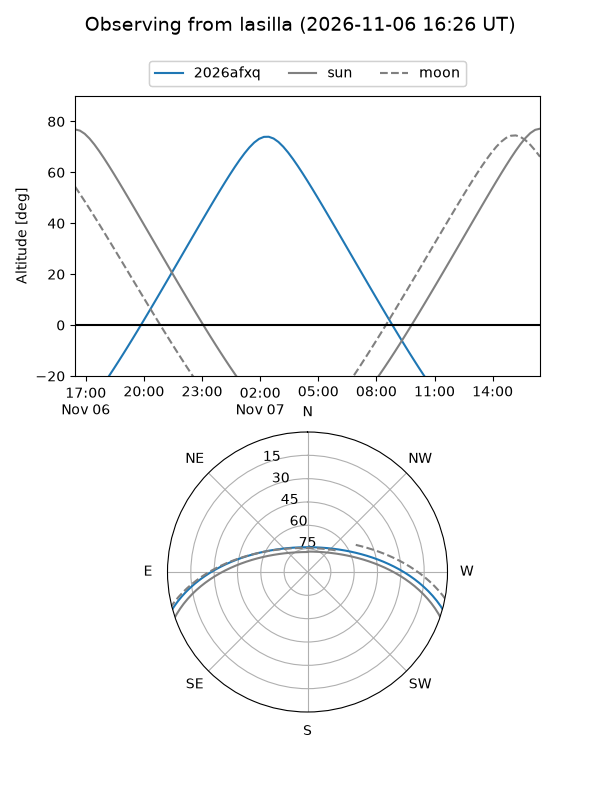
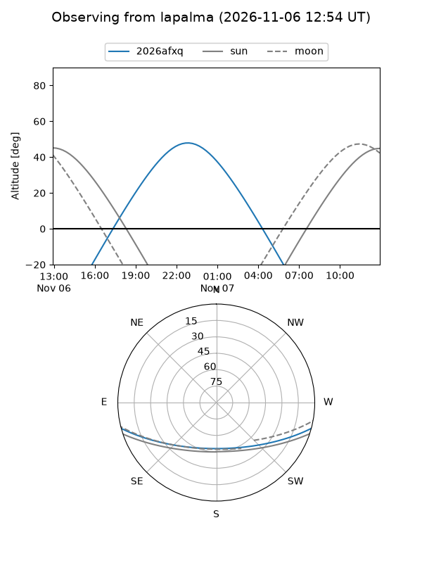
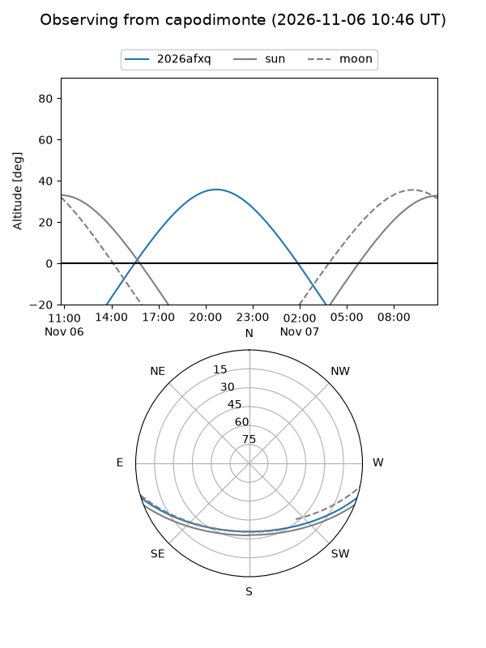
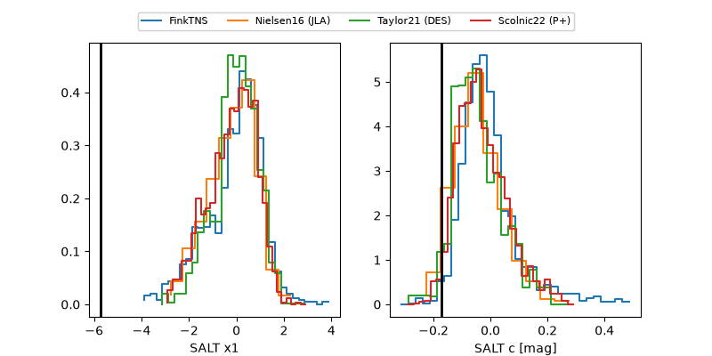

2026afxq
Target 2026afxq at 2026-11-06 17:19
Aliases and brokers:
FINK-ZTF: ztf.fink-portal.org/ZTF26accipwv
Lasair-ZTF: lasair-ztf.lsst.ac.uk/objects/ZTF26accipwv
ALeRCE-ZTF: alerce.online/object/ZTF26accipwv
YSE-PZ: ziggy.ucolick.org/yse/transient_detail/2026afxq
TNS name: wis-tns.org/object/2026afxq
Direct TNS query: direct search
alt names
ZTF26accipwv (ztf,fink_ztf)
2026afxq (tns,yse)
Coordinates:
equatorial (ra, dec) = 10.2560,-13.46779
equatorial (HMS+DMS) = 00:41:01.44,-13:28:04.05
galactic (l, b) = (112.3172,-76.12446)
Flags:
peak dt: +12.0
Photometry:
last ztfg=19.92, ztfr=20.30
2 ztfg, 1 ztfr detections
Lightcurve
Visibility



Additional plots
